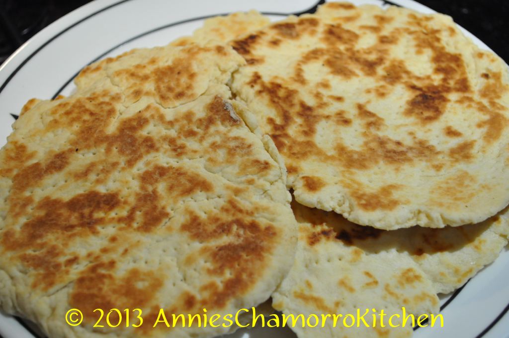

Sweet Flour Titiyas
Home

Description
A staple for Chamorro fiesta tables. This easy to make sweet flour titiyas pairs well with chicken kelaguen.
Ingredients
- 3 cups of all purpose flour
- 4 teaspoons of baking powder
- ½ teaspoon salt
- ¾ cup coconut milk (see note below)
- ¼ cup melted butter
- ¼ to ½ cup cream of coconut (the sweet one, used for mixed drinks)
NOTE: If you don't find or have any cream of coconut, just increase the coconut milk to 1 cup, and add ½ cup white granulated sugar. Follow the rest of the instructions below.
Steps
- Mix the dry ingredients together in a large mixing bowl. Add the coconut milk, melted butter, and cream of coconut (start out with ¼ cup; increase to a total of ½ cup, depending on how humid your day is-more humid means less liquid). Mix together until a dough forms; knead gently to form a smooth ball of dough.
- Break off golf-ball sized pieces. Flour your rolling surface and rolling pin. Roll out the piece of dough into a flat disc (about ⅛-inch thick). Place the titiyas on a dry skillet; prick all over with a fork to prevent bubbling during the cooking process.
- Pan-fry on a dry skillet over medium-low heat for about 3-4 minutes on each side, or until the bottom begins to turn a golden brown; flip over and cook the other side until it turns a nice golden brown. For thicker titiyas, cook over low heat for 4-5 minutes on each side; the titiyas is done when you gently press down on the center and it feels somewhat firm to the touch.
- Place cooked titiyas on a plate covered with clean kitchen towel to keep warm. Serve with chicken kelaguen. Enjoy!